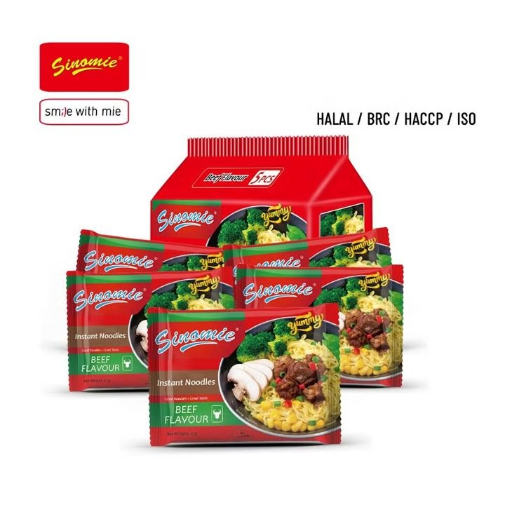
Reference image. Shows the product type, not the Chinese maker's product.
Instant noodles, braised beef flavour (bag, approx. 105 g)
Bagged instant noodles with beef seasoning as a quick hot meal for the site, only hot water needed.
Specifications
| Weight per bag | 85-105 g |
|---|---|
| Flavour | Beef (braised) |
| Preparation | approx. 3 min with boiling water |
| Packaging | Single bag (film), outer carton 24-30 pieces |
| Shelf life | 6-12 months |
| Allergens | Gluten (wheat), soy per FIC Regulation (LMIV) Annex II |
| Price basis | per single bag |
Internal
Listed group (HKEX 220) headquartered in Shanghai and a direct competitor of Tingyi in instant noodles and tea drinks; contact data and EU office not checked.
- Website
- uni-president.com.cn
- Maps
- 📍 Factory on Google Maps
More
VAT: not comparable, roughly a factor of 10 apart.
- Landed cost
- €0.10
- Selling price (net)
- €0.97
- Margin
- €0.88 · 90.2%
- Target price China
- €0.62
- Saving vs. buying in Germany
- 91.6%
- Minimum order
- 1,000 bags
- Price basis
- Listing
per unit, net. China prices are list prices (not negotiated). Freight, duty and handling are assumptions; import VAT is deductible as input tax. Assumptions: freight by product group, 3 % handling, selling 15 % below the German market price, target margin 25 %.
Description
Bagged instant noodles with beef seasoning for a quick hot meal on sites without a kitchen; only hot water is needed.
More
Evenly baked or fried noodle blocks, intact film bags and clear allergen labelling (wheat, soy) are expected. Professional buyers in Germany demand German labelling under the FIC Regulation, batch traceability, and proof on residues (e.g. ethylene oxide/2-chloroethanol) and on additives under Reg. (EC) 1333/2008. If the seasoning contains animal-derived ingredients, import eligibility under veterinary law must be clarified in advance.
Customs
| Tariff code | 190230 |
|---|---|
| Duty rate | check in TARIC |
Standards & marks (Germany/EU)
VO (EG) 178/2002General Food Law, traceabilityVO (EU) 1169/2011Food Information to Consumers Regulation, labelling and allergensVO (EG) 852/2004Food hygiene (HACCP)VO (EG) 1333/2008Food additivesVO (EG) 396/2005Maximum residue levels for pesticides and ethylene oxideVO (EU) 2017/625Official controls, including at import
Internal · notes
Request from the supplier
- Valid HACCP / ISO 22000 / BRCGS / IFS certificate of the production site.
- Lab report per batch on pesticide and ethylene oxide/2-chloroethanol residues and on additives.
- Complete recipe with allergen matrix and origin of animal-derived ingredients in the seasoning.
- Written clarification with the veterinary office/border control post whether the seasoning mix may be imported.
- German label draft under the FIC Regulation (ingredients, allergens, nutrition, importer, best-before date).
- Sample with tasting and traceability proof (lot no.) before series release.
Sources
Listing 'Wholesale 5PCS Bag Package OEM Health Halal Beef Flavor Indomi Tissue 65g / 85g Instant Noodles' (Qingdao Sinomie Food): 0.09-0.13 USD per bag, MOQ 1,000 bags, price seen on the supplier page sinomie.en.made-in-china.com, Incoterm not stated. Comparison product, not identical: bags of 65 g/85 g instead of approx. 105 g, OEM goods without the Master Kong brand; the title mentions '5PCS Bag Package', price unit per listing is 'Bag' (assumption: per single bag). For exactly 105 g and branded goods: request a quote. Specification/price basis according to research: price per single bag. DE: Master Kong approx. 105 g (3.73 oz), converted from a 5-pack to 1 bag; CN: comparison listing with 65 g/85 g bags (OEM, unbranded), not weight-equivalent; batch goods from the manufacturer would be by carton/pallet.
Goes well with
Accessories, consumables and products that sellers sell together with this item.
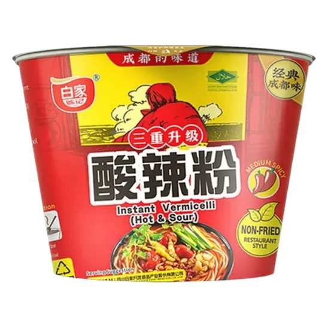
Trend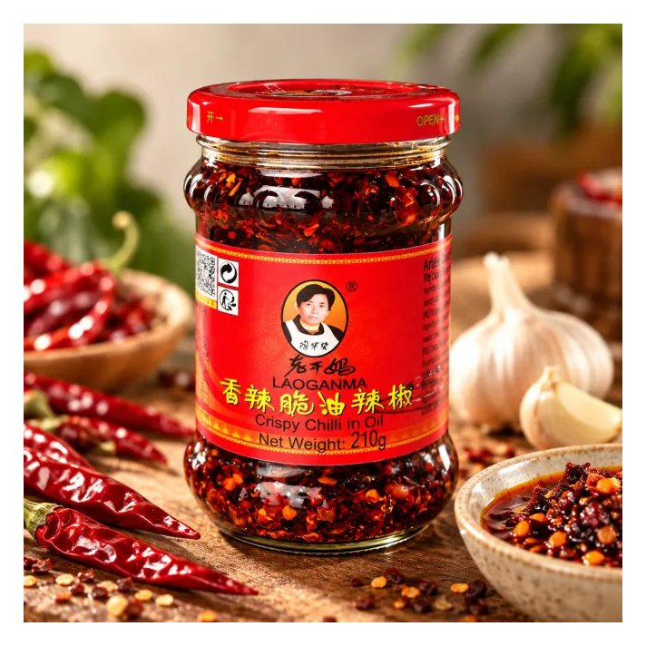
Trend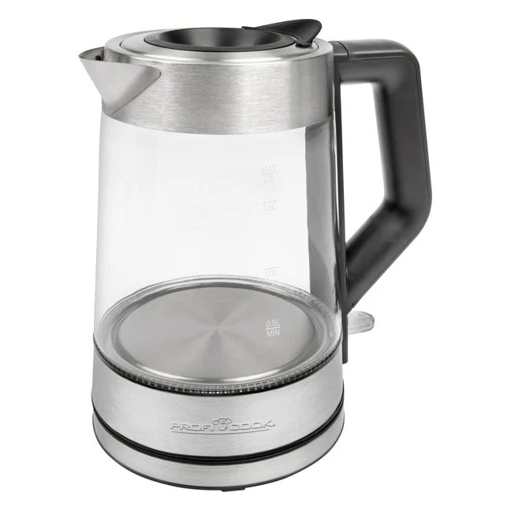
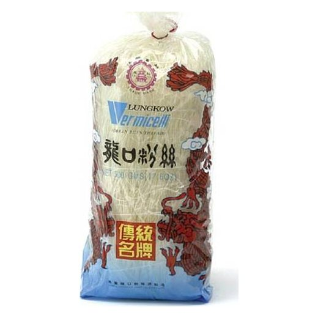
More products in this category
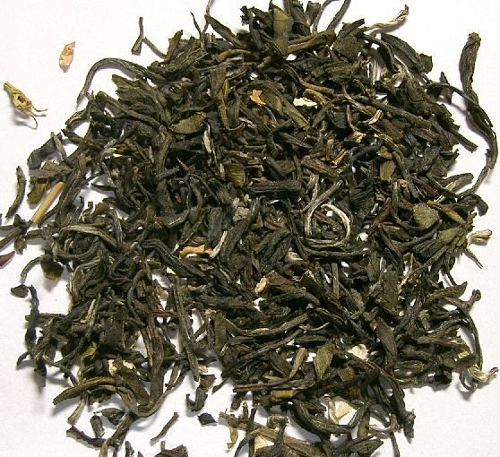
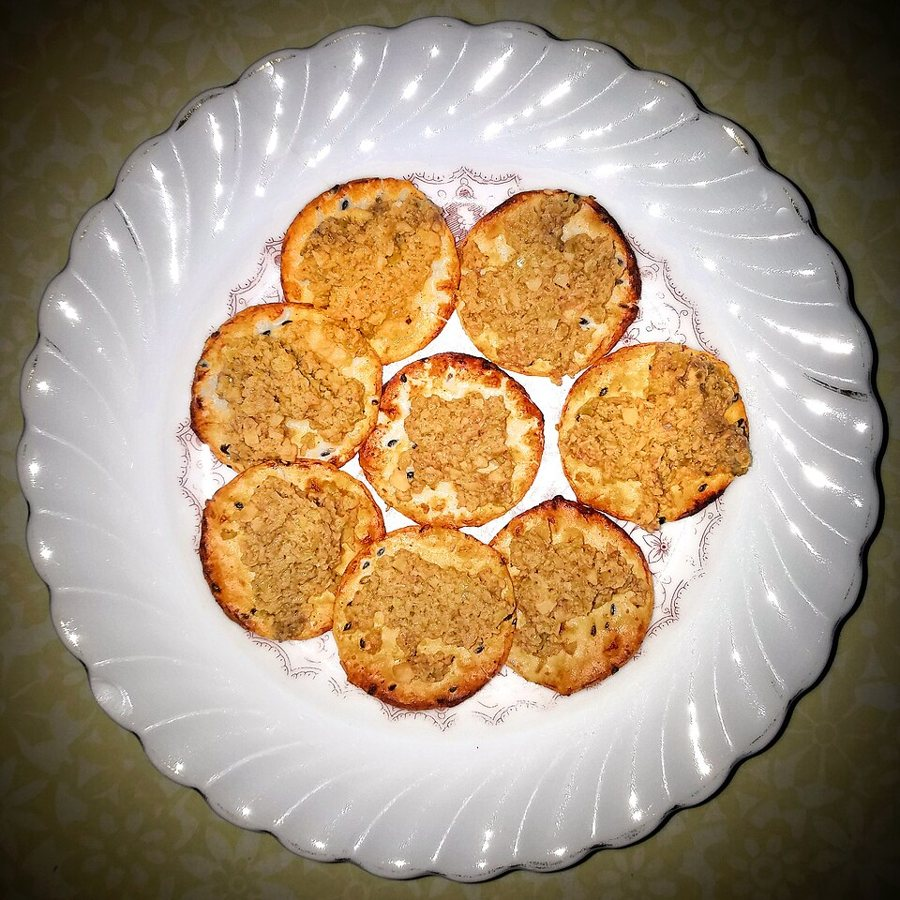
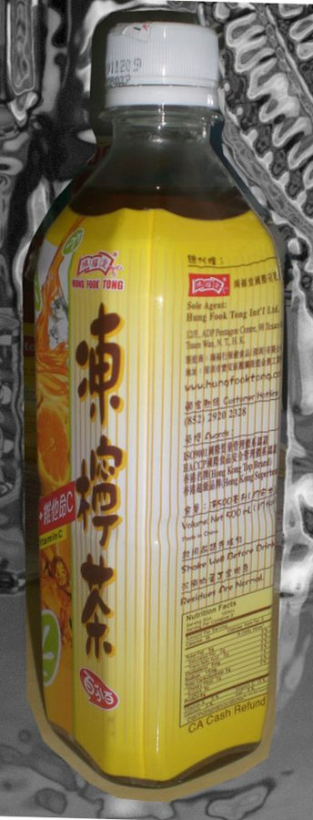
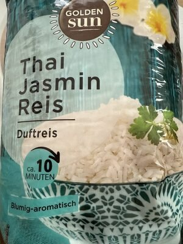
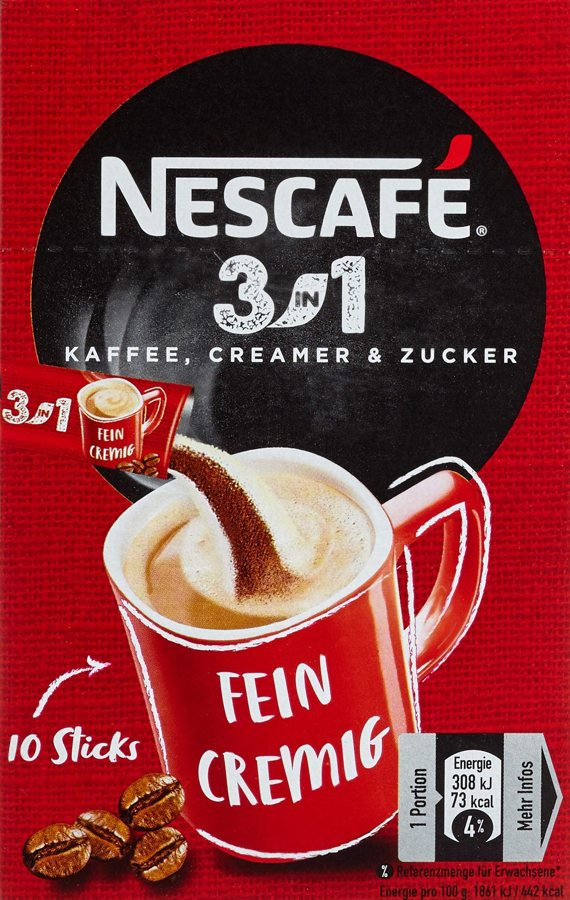
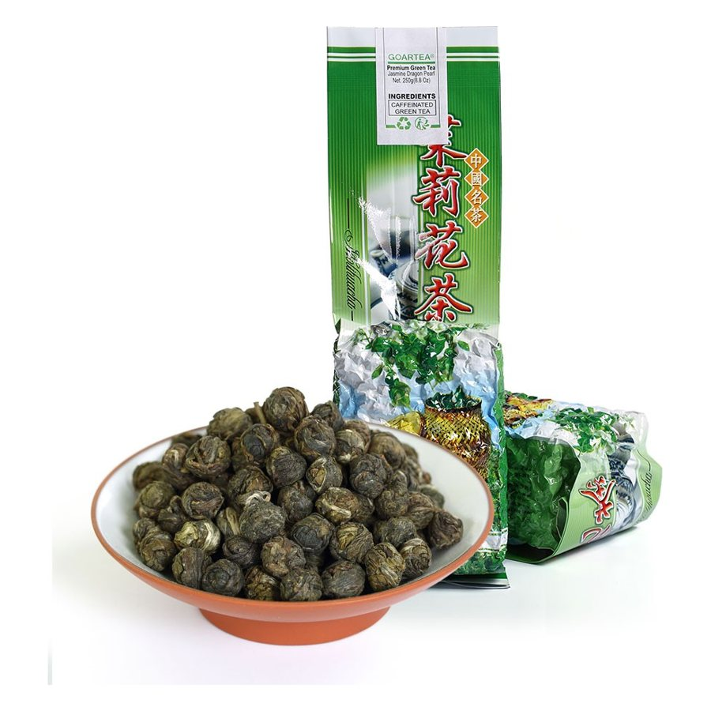
Upsell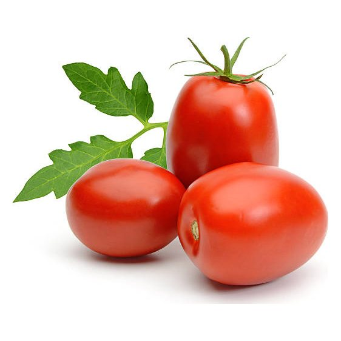
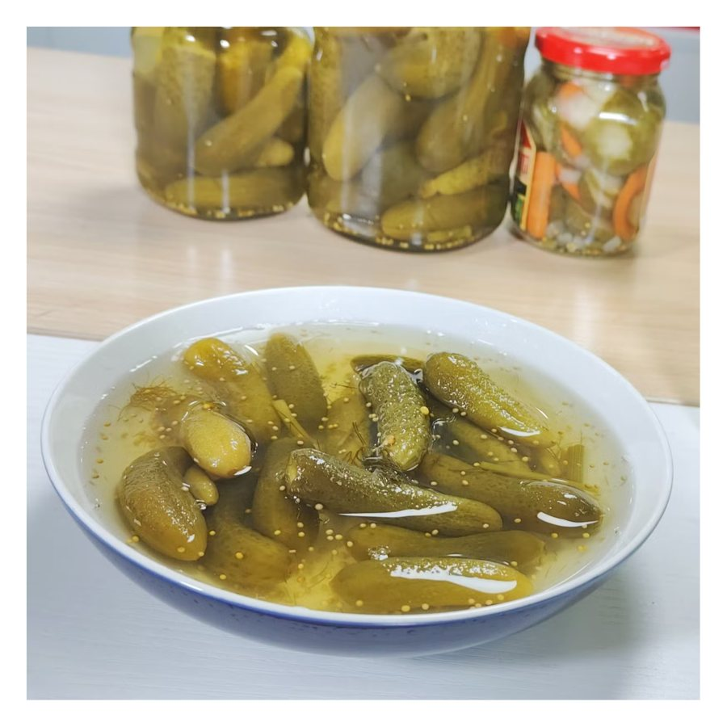
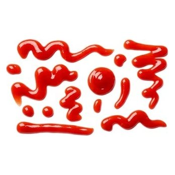
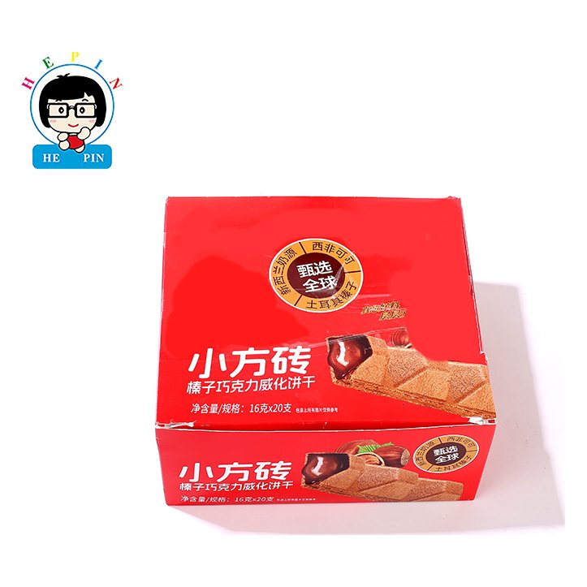
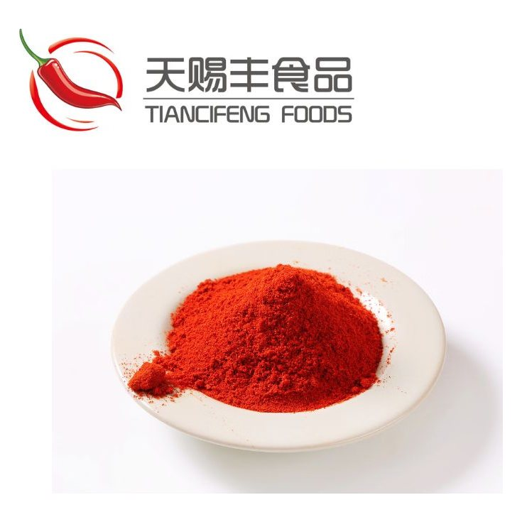
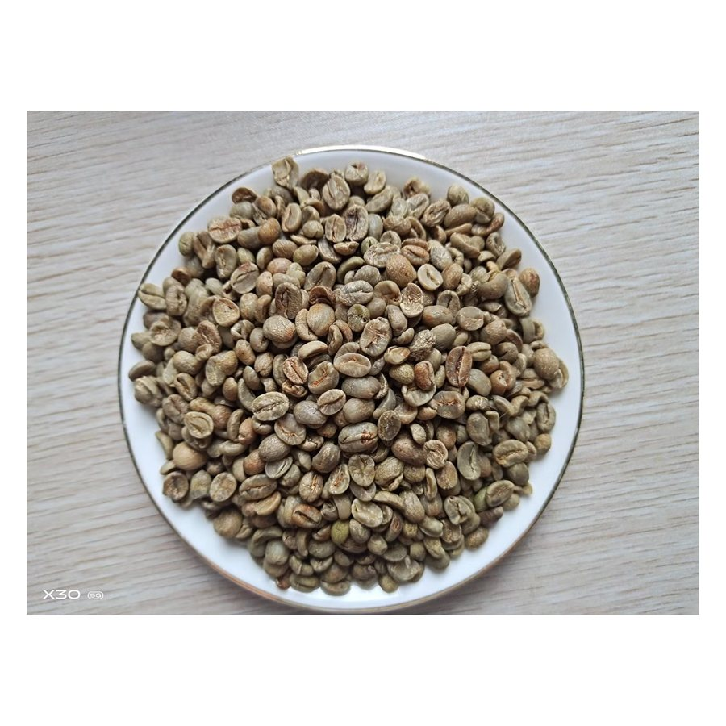
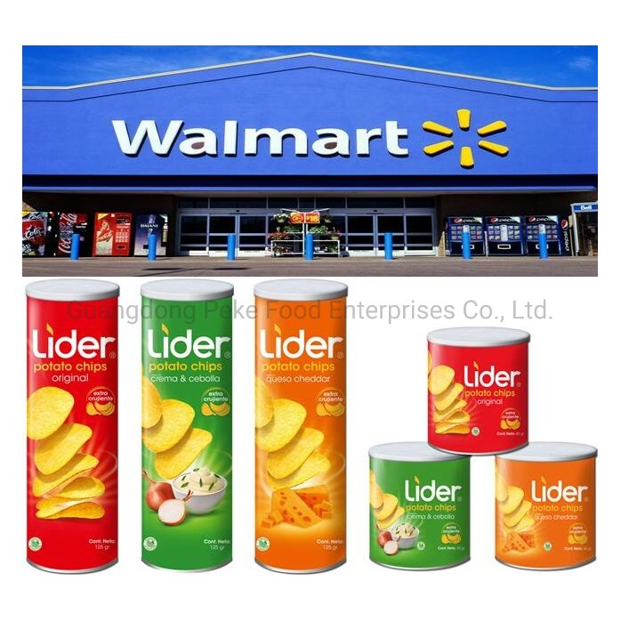
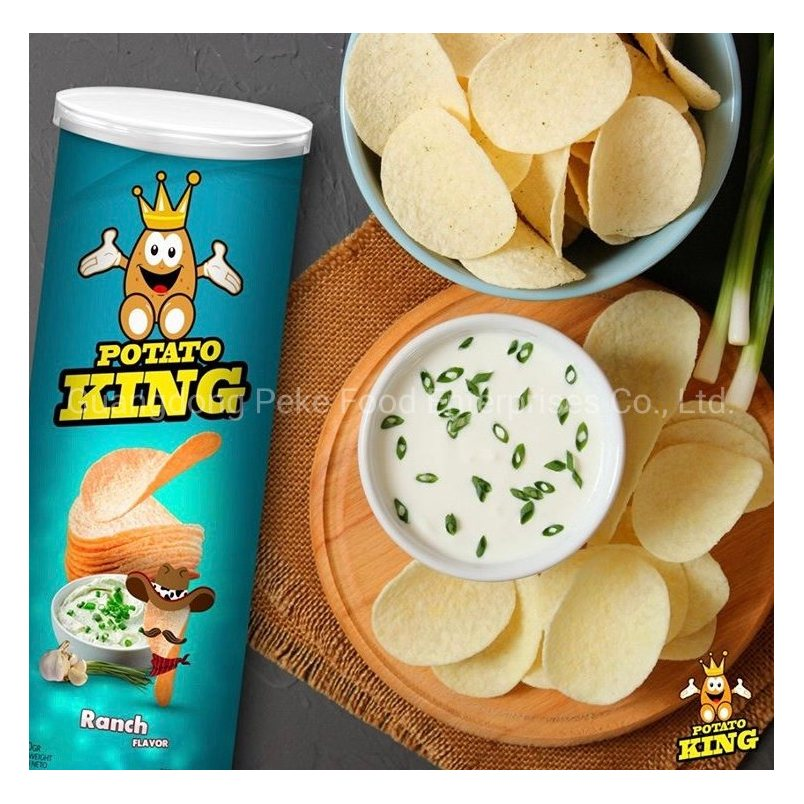